男低声部
合唱低音根基，音色浑厚低沉，支撑整体和声，奠定乐曲厚重基底。

01 / 社团简介
云南农业大学大学生合唱团成立于2009年，2019年4月正式重建，是经校团委批准，在校团委与艺术与美育教研室指导下，专注合唱培训与文艺演出的校级特色艺术社团。团员来自全校各学院本、硕学生，队伍配置规整：男高、男低声部各15人，女高、女低声部各20人，内设管理委员会统筹团队日常管理。
合唱团秉承“和时代奋进，谐历史梵音”的宗旨，以“饱含热爱，提高自身，传播艺术”为目标，在专业教师带领下常态化开展声乐训练、乐理学习与分声部排练。社团常年参与校级迎新晚会等常规文艺活动，同时深耕特色美育实践：2023年参与《把论文写在云岭大地上》录制；2024年亮相“美育浸润，党在我心”合唱比赛；2025年先后参与并操办“青春颂华章·奋进新征程”合唱比赛、学校农耕文化节文艺展演，以歌声展现农大学子风采。
社团坚持以美育人，丰富校园文化生活，持续提升成员艺术修养。未来，合唱团将精进演唱水平，打造校园美育品牌，力争登上更大舞台，用歌声讲述云农故事。
02 / 声部组成
男高男低各15人，女高女低各20人，声部和鸣，浑然一体。
合唱低音根基，音色浑厚低沉，支撑整体和声，奠定乐曲厚重基底。
演绎男声旋律与副旋律，音色明亮有张力，丰富乐曲中高音声部。
填充女声和声，音色温润厚重，衔接高低声部，稳固和声中层。
负责演绎主旋律，音色清亮通透，承担高音线条，烘托乐曲明亮层次。
03 / 精彩瞬间
每一次同台和鸣，都是热爱与艺术交汇的瞬间。
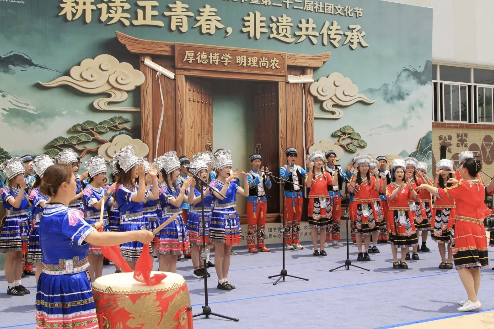
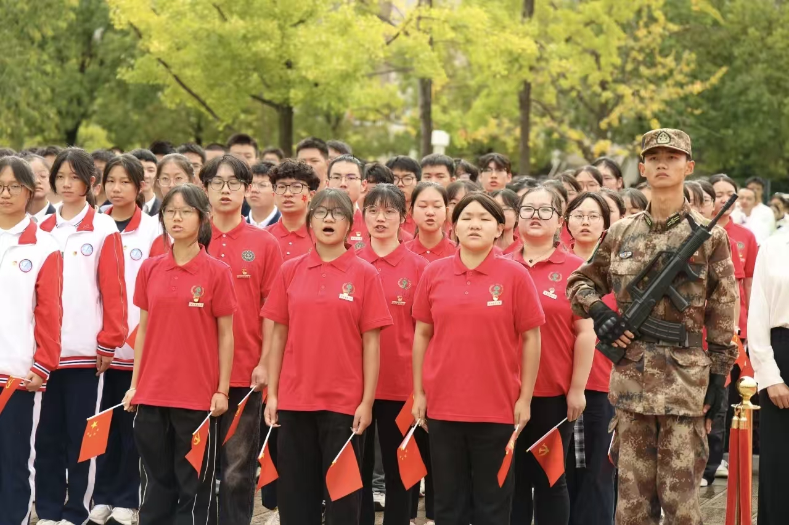
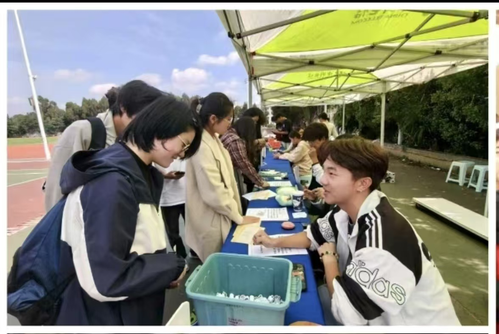

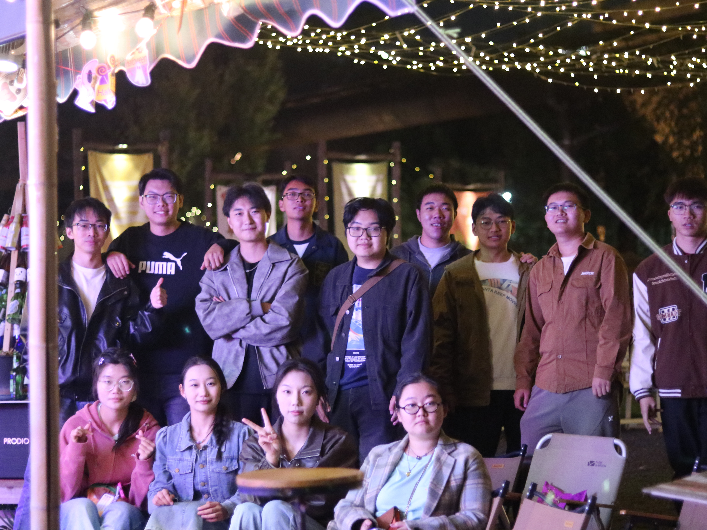
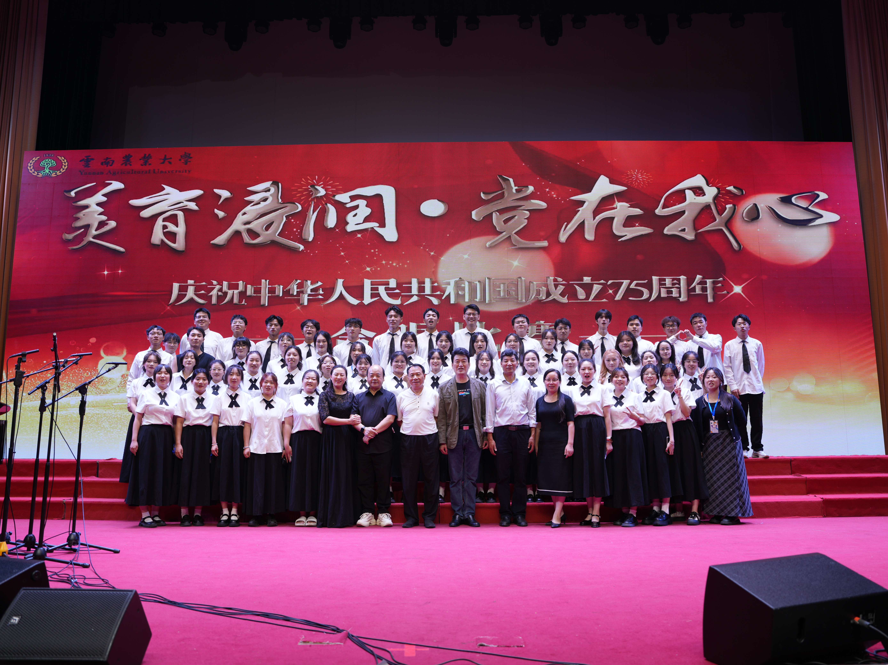
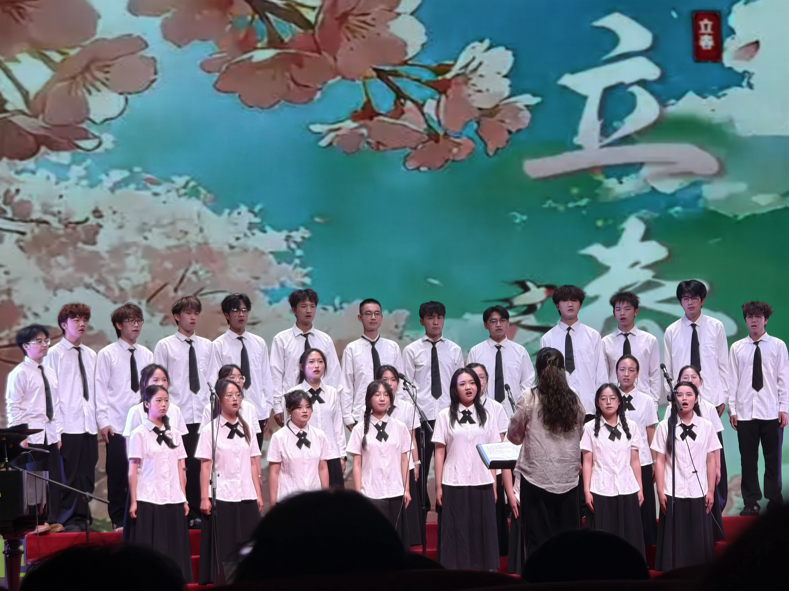
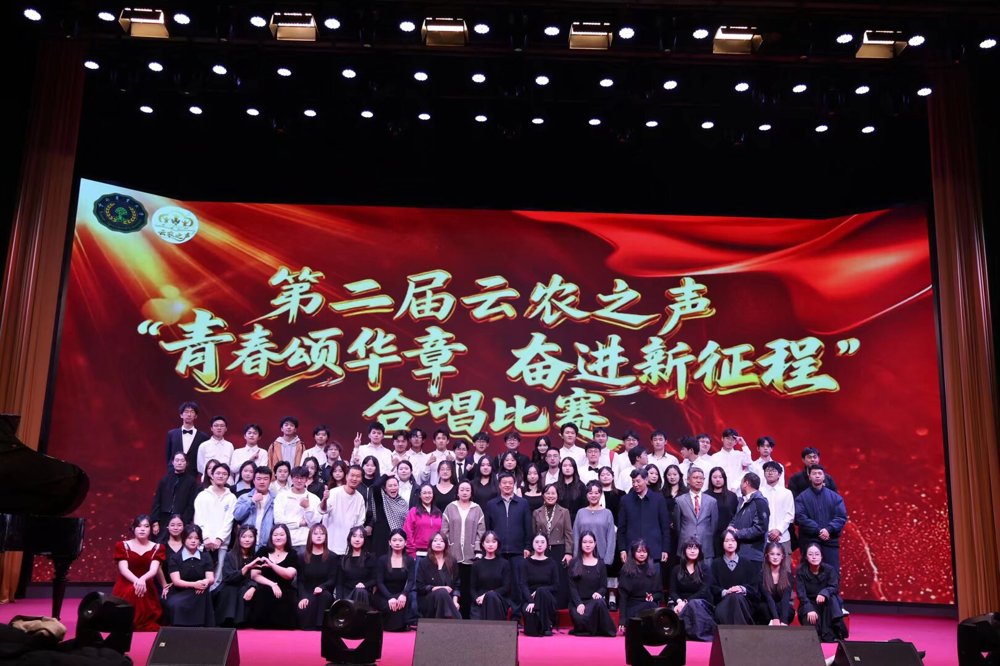
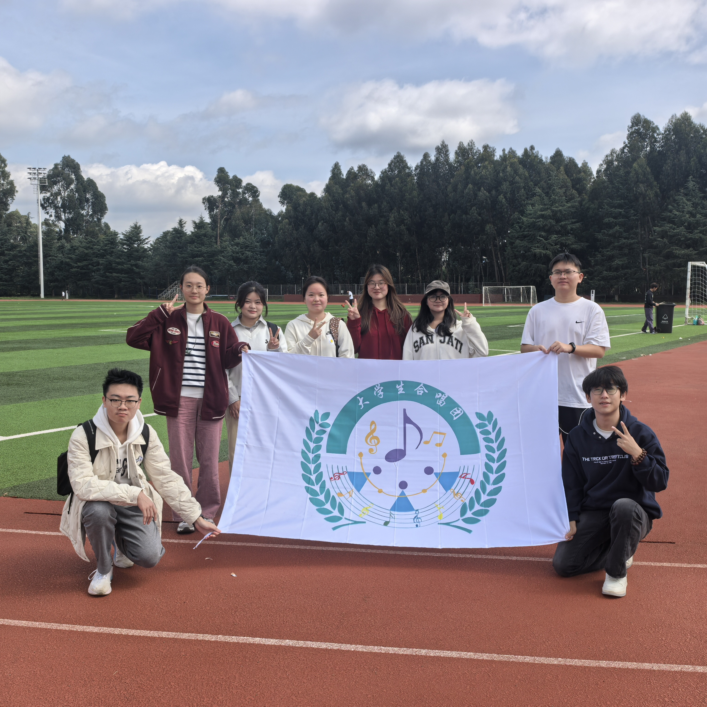
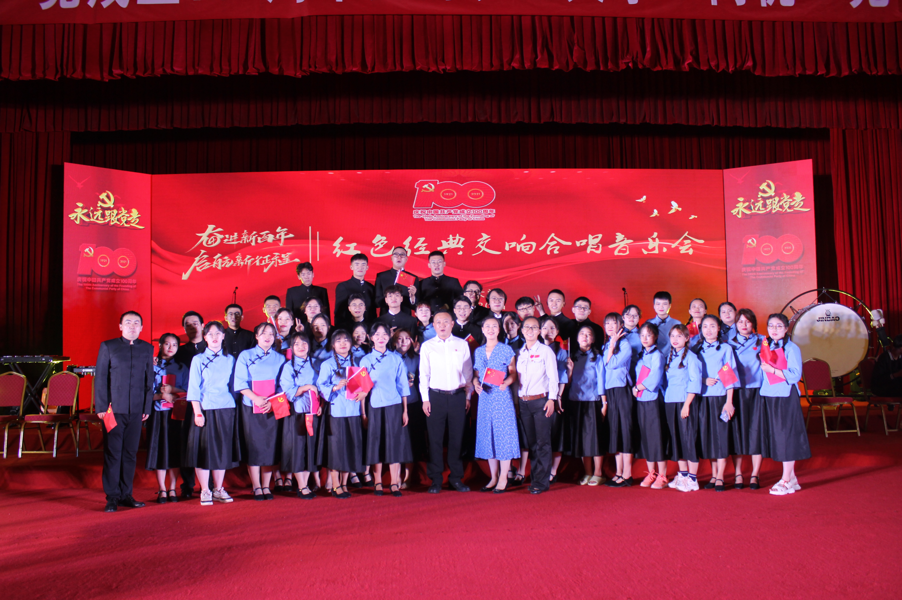
04 / 精彩活动
常态排练与特色美育实践并存，用声音连接校园与时代。

01
由云南农业大学与昆明市五华区、盘龙区、西山区共同举办的“在国旗下集合”——庆祝中华人民共和国成立76周年主题活动在云南农业大学举行。团省委、省青少年科技中心、昆明市教体局等共1000多人参加活动。
查看新闻报道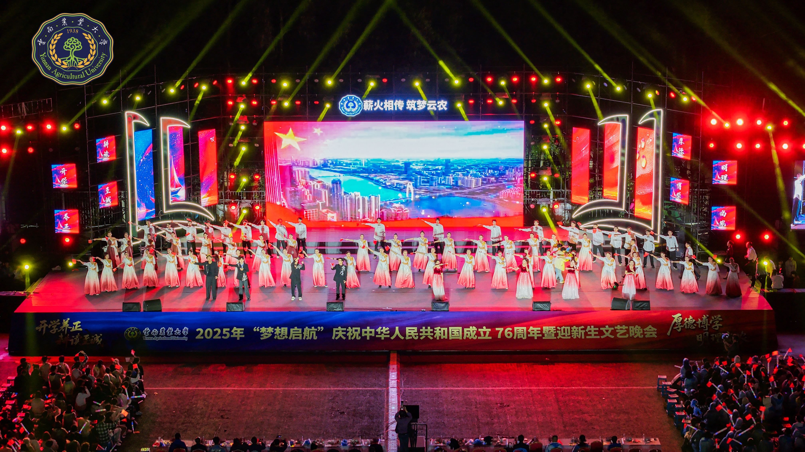
02
以学校党委书记王卫斌为代表的校领导们登上舞台与校合唱团一同演绎《歌唱祖国》。歌声激昂，把爱国情唱成集体的心跳，让“万人共情”不只是声浪，更是校园里流淌的精神血脉。
查看新闻报道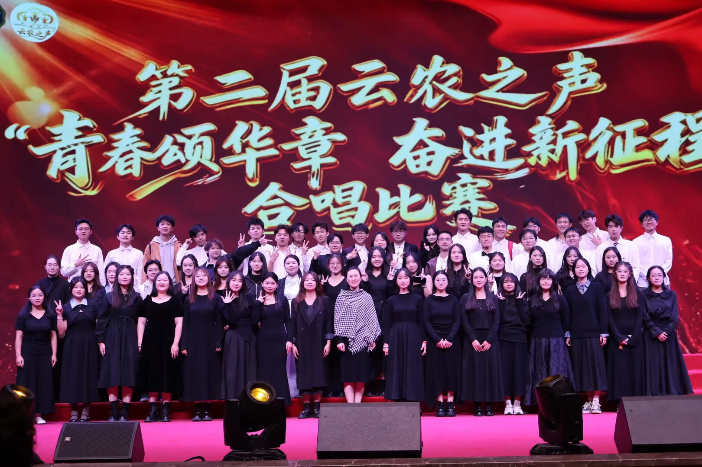
03
云南农业大学第二届“云农之声——青春颂华章·奋进新征程”合唱比赛在校友会堂隆重开唱。本次活动由校团委、美育与艺术教研室联合主办，是学校深化美育教育与爱国主义教育融合的重要实践载体。
查看新闻报道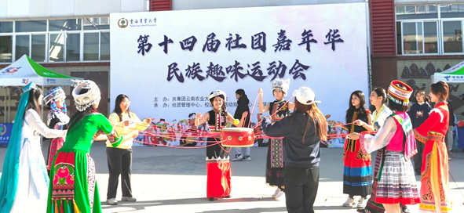
04
为深化铸牢中华民族共同体意识教育，弘扬民族团结精神，丰富校园文化生活内涵，由共青团云南农业大学委员会策划并主办的第十四届社团嘉年华民族趣味运动会暨系列主题活动于2025年12月6日隆重开启。
查看新闻报道
05
耕读传家久，诗书继世长。这个春天，让我们一起走进这些充满文化底蕴与青春活力的活动，在耕读文化的浸润中，遇见更丰富的校园生活，遇见更精彩的自己！
查看新闻报道05 / 荣誉墙
每一次同台出征，都是热爱与坚持结出的果实。
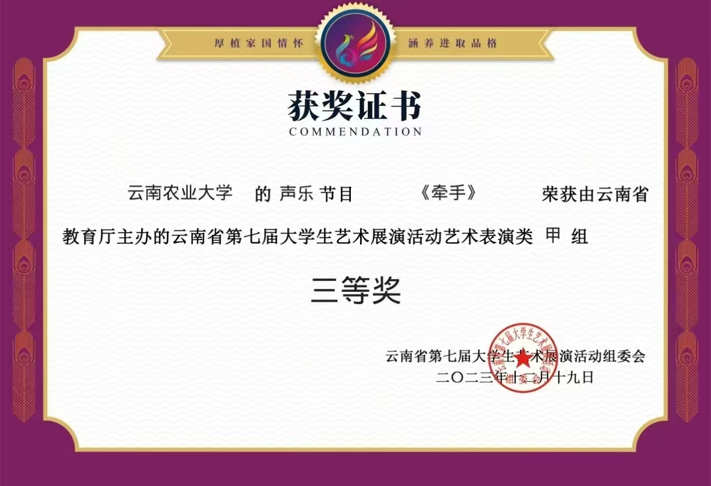